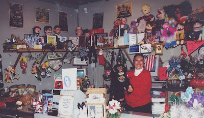

Maher Store?
2/28/2009
{kind=link}

From Kevin L.: Hello- About 5 years ago , my wife purchased one of your Charlie McCarthy figures and I have had much fun with it. I get to perform with him several times a year. I used to visit the shop "Grandma's Trunk" in Littleton where, I believe, you sold your figures. (File photo above with Deb Nash, store owner.)* * * * * *
From Clinton: For 27 years we had a display of products at our Maher Studios office (and home) in Littleton. But when we sold that location in 1998 we had to find a new location where customers could see and purchase products. After a period of searching, Deb Nash came to our rescue. For five years she displayed, demonstrated, and sold Maher ventriloquist products from her store on Main Street in Historic downtown Littleton. Eventually Deb decided it was time she retired and soon after Adelia and I decided pretty much the same thing. No longer is their a local outlet for Maher products.
(We do continue to sell some products as part of our retirement. They can only be seen online, however, at these locations: Maher Studios - Encore and Maher Studios Bookstore . Also eBay. To view all my current eBay listings, Click Here. )